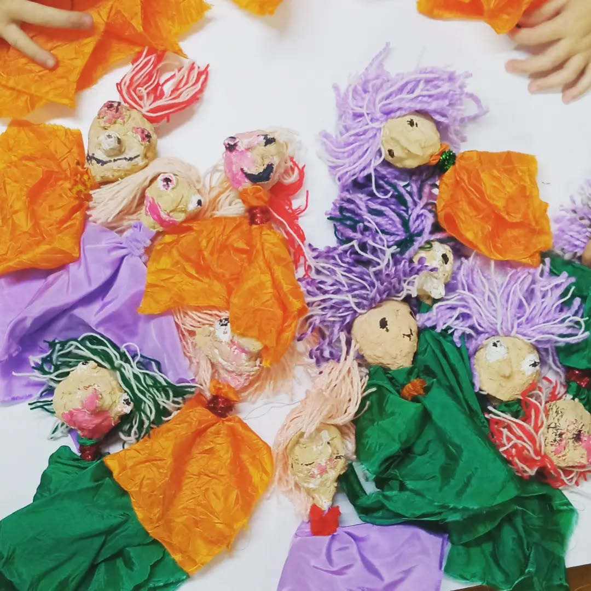

Το κουκλοθέατρο και η κούκλα είναι πάντα ένας ασφαλής και μαγικός τρόπος να εξερευνήσουμε τη φαντασία και τη δημιουργικότητά μας! Στο Εργαστήριο Κατασκευής Κούκλας, τα παιδιά θα έχουν την ευκαιρία να δημιουργήσουν τις δικές τους μοναδικές κούκλες, ανακατεύοντας υλικά όπως κόλλες, χρώματα, κλωστές και χαρτόνια, με μια γερή δόση φαντασίας.
Μαζί, θα παίξουμε, θα τραγουδήσουμε, θα δοκιμάσουμε τις κούκλες μας και θα ανέβουμε στη σκηνή του κουκλοθέατρου για να ζωντανέψουμε τις ιστορίες μας.
Ολα τα εργαστήρια είναι βιωματικά και απευθύνονται σε παιδιά σχολικής και προσχολικής ηλικίας.
Τα παιδιά χωρίζονται σε ομάδες για καλύτερη συνεργασία και συμμετοχή.
Προσοχή! Το ντύσιμό μας θα πρέπει να είναι άνετο και πρόχειρο.
Ελάτε με έμπνευση και έτοιμοι να διασκεδάσετε!